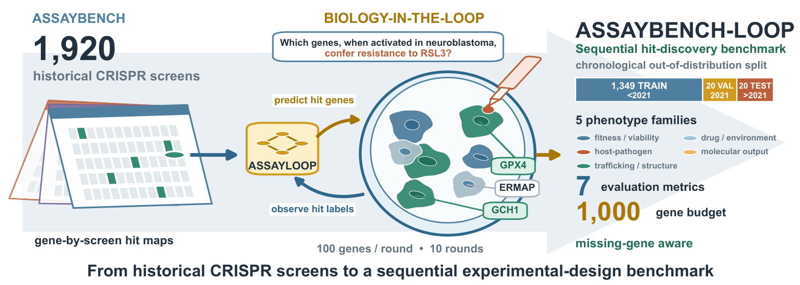

Sequential Experimental Design · CRISPR Screens · Genentech · 2026
Biology-in-the-loop: Amortized Adaptive Hit Discovery in CRISPR Screens
Genentech, South San Francisco, CA, USA · ★ equal contribution
You can only afford to test a few hundred genes at a time, and you have to choose the next batch before you know how the last one turned out. LLMs know a lot of biology but are unreliable at learning from the feedback; classical sequential design learns from feedback but starts from nothing. AssayLoop hands the screen from one to the other: an LLM picks the first rounds, then a policy trained across a thousand historical screens takes over.
Hits recovered against genes assayed, averaged over the 20 held-out screens. Ten rounds of a hundred genes, every method picking from the same full-genome candidate pool. The dashed line is chance: what picking genes at random recovers. All 58 methods, screen by screen →

Abstract
Many biological discovery problems require experiments to be selected sequentially under constrained budgets. CRISPR screening is a prominent example, as exhaustive perturbation testing is often infeasible and candidate perturbations must instead be prioritized over multiple experimental rounds. Existing approaches face complementary limitations. Large language models provide broad biological prior knowledge but often struggle to learn in-context from feedback collected over successive experimental rounds. Classical sequential design methods adapt to observed outcomes but lack extensive biological prior knowledge. We introduce AssayBench-Loop, a sequential experimental design framework for adaptive hit discovery in CRISPR screens. We train a model, AssayFormer, which learns an amortized acquisition policy from historical screens, allowing screening strategies to transfer across assays while adapting to feedback from the current experiment. It further incorporates language-model-derived biological priors through an adaptive handoff strategy, AssayLoop, using LLM guidance for early-round prioritization before transitioning to the learned policy AssayFormer. In retrospective evaluations on held-out screens, AssayLoop recovers 27.7% of hits after assaying only 5% of the candidate library and outperforms all evaluated sequential design baselines. These results demonstrate that combining transferable biological priors with feedback-adaptive policies can substantially improve hit discovery under constrained experimental budgets.
Headline findings
- Amortization transfers. A policy trained across historical screens beats every per-assay surrogate we tested, and the gap is largest in the early rounds where assay-specific feedback is scarce. See the recovery curves →
- Warm start and in-context adaptation are separable. The strongest warm-start model (Gemini-3.1-pro) and the strongest in-context learner (AssayFormer) are not the same model. Handing off between them beats either alone — 5.66× EF versus 4.69× and 4.83×. See the table →
- LLMs do not reliably use hit feedback. Removing the hit labels from the prompt barely changes what a frontier LLM picks, which is exactly the failure the handoff is designed around. See the label ablation →
- Different methods go after different biology. Effective pathway coverage reverses with scope: the LLMs pick tightly themed batches — EP-B 12–15 against 18–20 for the learned policies, out of a 186-group Reactome vocabulary — but shift theme from screen to screen, so across the whole test set they touch as much biology as the policies do. See the diversity explorer →
- A 27B open model can be trained into the loop. AssayLLM (Qwen3.6-27B + SFT + GRPO) reaches 3.70× EF alone and 5.05× when handed off to AssayFormer.
By the numbers
Explore
Full results
Every method in the paper's main table — enrichment factor, nAUC, shortfall, essentiality, and effective pathway coverage — sortable and filterable by family.
Recovery curves
Watch hits accumulate round by round for any subset of the 58 methods, averaged over the 20 test screens or broken out screen by screen.
Pathway diversity
What biology does each method actually go after? Effective Pathways at batch, screen, and dataset scope, with the Reactome sunbursts.
Gene embeddings
The BPMF gene embedding that initializes AssayFormer, projected and searchable by gene, cluster, hit rate, and essentiality.
How the loop is built
The pipeline panel by panel — the benchmark, the BPMF initialisation, supervised training, the context-delta RL reward, and the handoff — plus what the enrichment factor actually measures.
What the models learned
Round-by-round composition of a handoff, the pathways each LLM over-picks, and what observing one gene as a hit does to AssayFormer's predictions for the others.
Run it yourself
The full framework, the evaluation loop, the shipped screen-description embeddings, and a download script for the published sweeps.
Getting started
Two entry points, and the smaller one is probably the one you want. Benchmarking a policy of your own needs the assaybench package and nothing else — the screens, the paper's test set and the metrics are all in it. Cloning this repository is for reproducing our methods.
Score your own policy
pip install assaybench
That gives you the 20 test screens the paper reports on, by name, and the metric functions that produced its numbers. Everything between is yours.
from assaybench import AssayBenchDataset, adjusted_nauc, enrichment_factor, load_manifest
# The paper's test set: 20 genome-wide screens, curated and shipped with the package.
wanted = {s["dataset_name"] for s in load_manifest("assayloop-test").screens}
_, _, test = AssayBenchDataset(dataset_name="biogrid", split_type="year", fold=0) \
.get_train_test_split()
screen = next(s for s in test if s["dataset_name"] in wanted)
library = screen["relevance_genes"]
hits = [g for g, is_hit in zip(library, screen["hit"]) if is_hit]
# Your policy. Ten rounds of 100 genes; the labels for a round are revealed
# before the next one is proposed.
rounds = my_policy(screen, n_rounds=10, batch_size=100)
acquired = [gene for batch in rounds for gene in batch]
print(enrichment_factor(acquired, library, hits, budget=1000)) # EF, the headline number
print(adjusted_nauc(rounds, library, hits)) # did it get there early?
Reproduce the paper
The AssayFormer architecture, the GRPO training loop, the LLM harness and the handoff live here rather than on PyPI, because they know where this repository keeps its files.
git clone https://github.com/genentech/assayloop cd assayloop pip install -e . # Re-run a method on the same 20 screens. assayloop run --screen-set public --model assayformer
Either way the screen data comes from Genentech/assaybench on the Hugging Face Hub. Nothing falls back silently: if an asset is missing, the run stops and names what to download.